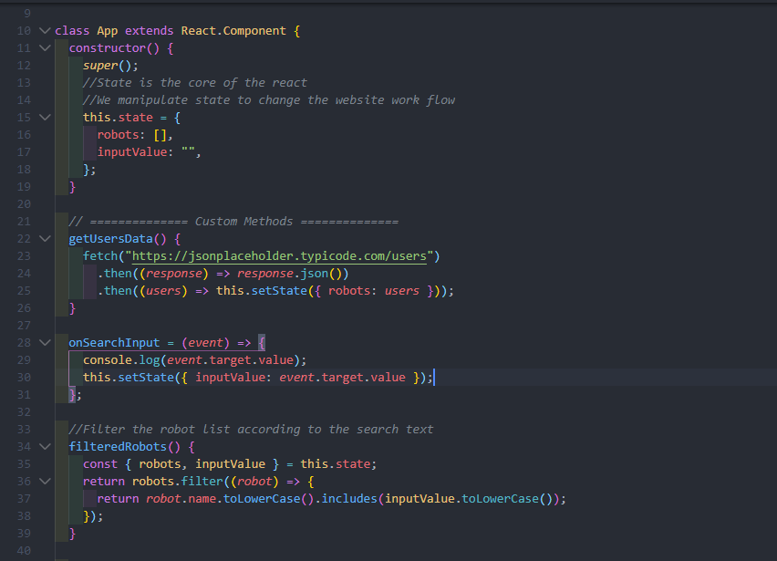

React mixes the wonderful things of OOP and FP and before we start discussing about that, lets take a look on the mindset to start developing the react project.
React Development Idea
The idea behind React
- One way data flow
- Component based development
- State driven development
- Life Cycle Hooks
As we can see, we have 4 main points of the mindset, and they are actually relating with each other.
1. One way data flow

One way data flow indicates that in react, the influence of components are from top to bottom. It means that only the children of the parent component will notice the changes. Which is cool.
2. Component based development

As we have talked about in the intro page, react depends on components. We use components to build up molecules then organisms, and then templates and pages.
- It makes everything becomes scalable, managable and reusable.
- Components are often written in pure function. So that the code will become predictable as well.
Components (Atoms) -> Molecules -> Organisms -> Templates -> Pages
3. State driven development

The state obj is stored in a class (not a component), and by manipulating the state, we change the input of the components (pure function) and generate different result.
3. Life Cycle Hooks

React provides a way for us to manage and play with state. And according to the life cycle stage we are at, we can trigger different operations to manipulate the state.